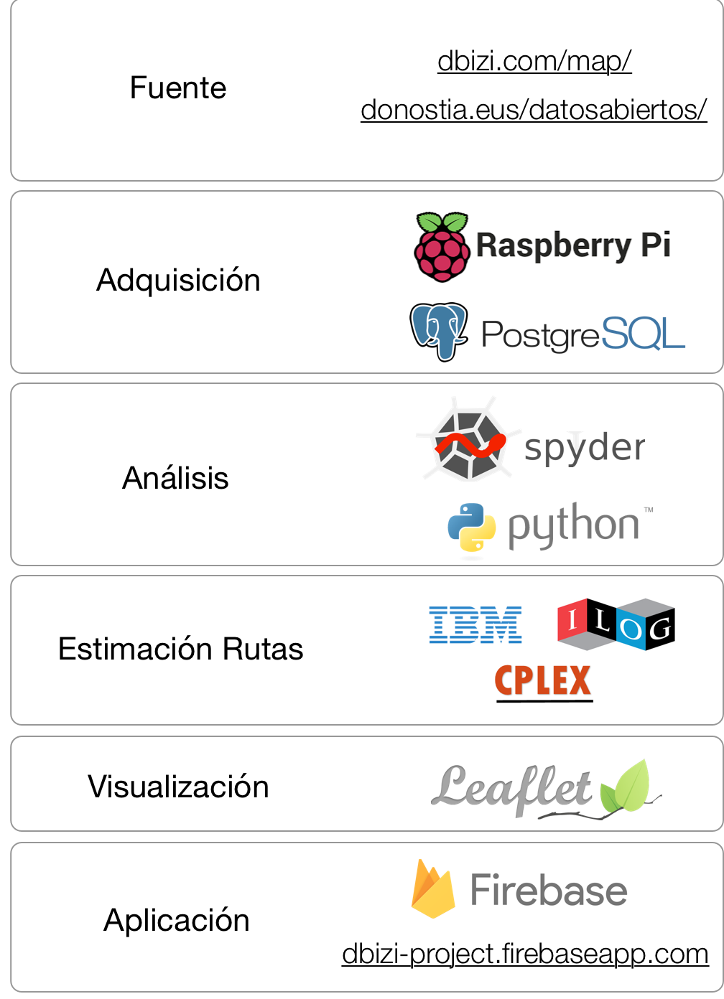

Metodología del Proyecto
1. Fuente Datos
Los datos de este proyecto se han extraído del servicio de Datos Abiertos del Ayuntamiento de San Sebastián. En concreto, se ha obtenido la red de carriles bici (.kml), los aparcamientos públicos de bicicletas de la ciudad (kml), y la disponibilidad de bicicletas en tiempo real (.json)
Los usuarios de dBizi pagan en función del uso que hacen del servicio. Obviamente, el sistema informático de dBizi registra en algún punto los tiempos de salida y llegada de cada usuario (desconozco si las estaciones también se registran). Sin embargo, esta información personal de cada usuario es inaccesible para el público. Cabe destacar que en este proyecto se ha realizado una estimación de los viajes realizados empleando únicamente el número de bases disponibles en cada estación, y no datos personales de los usuarios.
2. Adquisición Datos
A pesar de contar con la disponibilidad de bicicletas en tiempo real, el servicio de datos abiertos no ofrece la posibilidad de acceder a datos históricos. Es por ello que, con el objetivo de estudiar la viabilidad de este proyecto, se ha desarrollado una simple plataforma de adquisición de datos en una Raspberry Pi. Este plataforma comprueba, con una frecuencia minutal, si los datos a tiempo real han sufrido algún cambio, en cuyo caso, dicha información se almacena en una base de datos PostgreSQL con formato JSON. Con esta plataforma se han almacenado datos durante dos semanas de Junio de 2018.
3. Análisis Datos
Tras la obtención de datos, se ha realizado un análisis exploratorio y de limpieza en Python. Por un lado, se han extraído las variables más interesantes para este estudio: longitud y latitud de las estaciones, y disponibilidad de bases libres (u ocupación de bases enganchadas). En este sentido, se ha visto que la suma de bases libres y bases enganchadas no se mantiene constante al número de bases totales en cada estación. A pesar de que pueda haber un retraso en la actualización de los datos, no se han visto un patrón aclaratorio.
4. Algoritmo Estimación Rutas
Los datos de los que parte este algoritmo son: En un tiempo t, se ha registrado un cambio en el número de bases disponibles k de una estación s. Si dicho cambio es positivo, se considera que aumenta el nímero de bases libres.Con dichos datos, y considerando que un usuario no volverá a la misma estación de la que partió, se construye el conjunto de todos los viajes posibles.
Considerando un tiempo acotado (servicio diario de dBizi de 06:30 a 23:00 horas), se ha resuelto el problema de optimización lineal entera por medio de IBM ILOG CPLEX
A cada viaje se le asigna un 1 si se realiza y un 0 en caso contrario. El coste de un viaje se calcula como la diferencia entre la duración estimada de un viaje en bicicleta entre las estaciones seleccionadas. Esta duración se ha estimado con la API de GraphHopper.
5. Visualización
Para la visualización se ha empleado la librería Leaflet.js, que mediante un módulo de visualización temporal (TimeDimension), ha permitido incluir los viajes de cada bicicleta sobre el mapa de San Sebastián. Por otro lado, las gráficas de frecuencias y estadísticas del análisis exploratorio se han obtenido por medio de Matplotlib de Python.
6. Aplicación Web
Por último, la aplicación web se ha desarrollado mediante el servicio Firebase de Google. Actualmente la web solo ilustra el proyecto y el concepto de la aplicación.